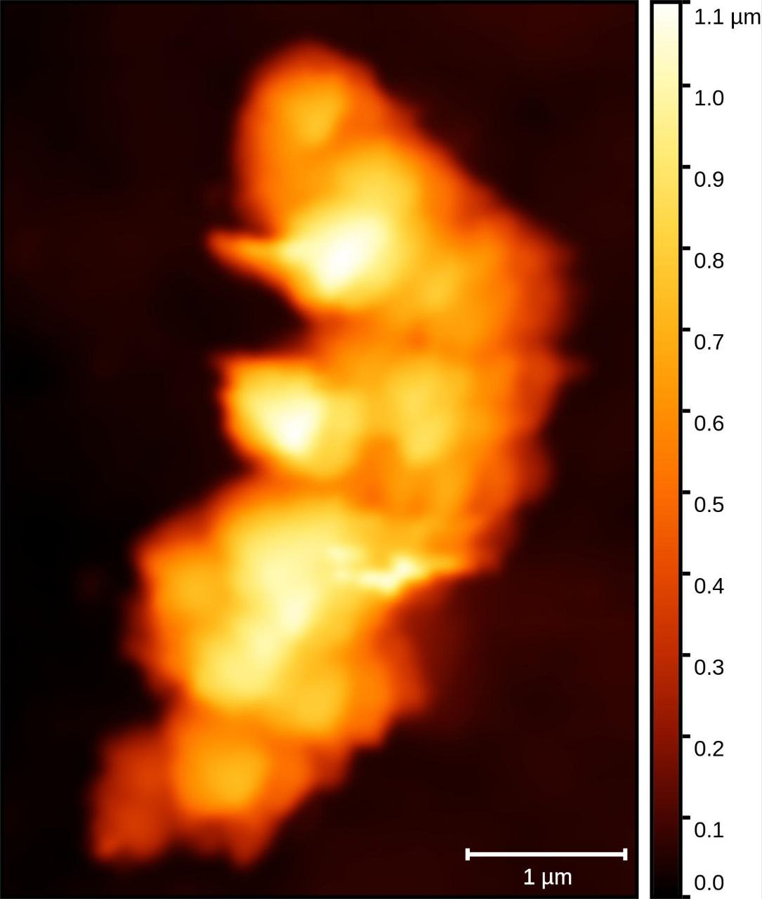
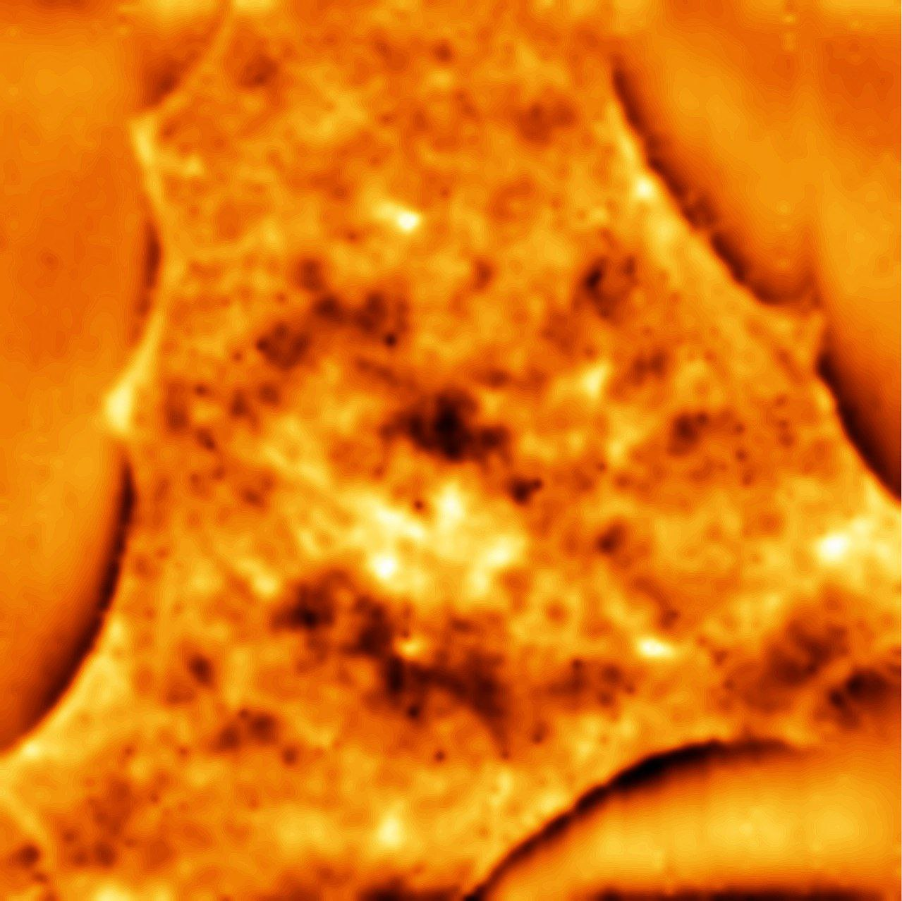
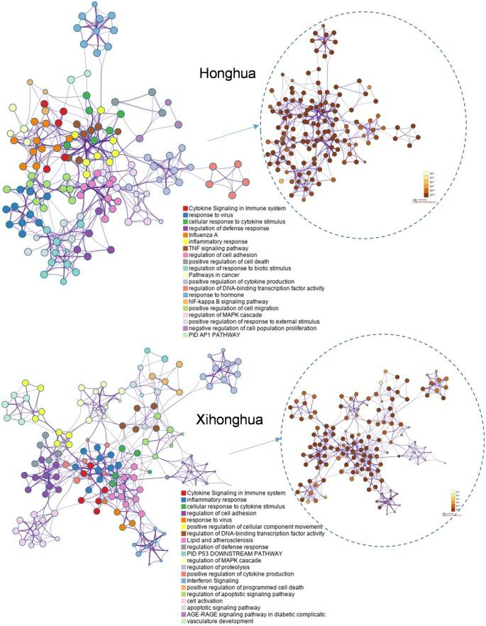

Research Assistant at the Mechanobiology Laboratory
Supervisor – Prof. Tri Pham
Oct 2021 – current
NU, Astana, Kazakhstan
Measured biomechanical properties of mammalian cells and bacteria, characterized biosensors and nanoparticles using AFM.

Summer research project
Supervisor – Prof. Prim Singh
Jun 2022 – Aug 2022
NUSOM, Astana, Kazakhstan
A molecular basis for B-type heterochromatic compartmental domains in mammalian interphase nuclei. Analyzed biomechanical properties of young and old lung fibroblasts using AFM.
Summer research project
Supervisor: Prof. Yingqiu Xie
Jun 2021 – Aug 2021
NU, Astana, Kazakhstan
Honghua extract mediated potent inhibition of COVID-19 host cell pathways. Investigated potential anti-COVID-19 properties of Honghua herb using network pharmacology analysis.

Publication
Madikyzy, M., Tilegen, M., Nazarbek, G., Mu, C., Kutzhanova, A., Li, X., Ma, C., & Xie, Y. (2022). Honghua extract mediated potent inhibition of COVID-19 host cell pathways. Scientific reports, 12(1), 14296. https://doi.org/10.1038/s41598-022-15338-9